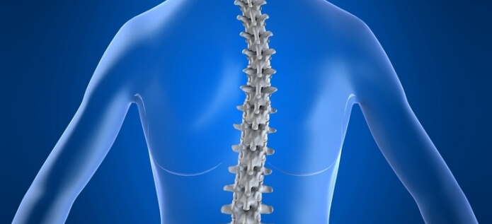
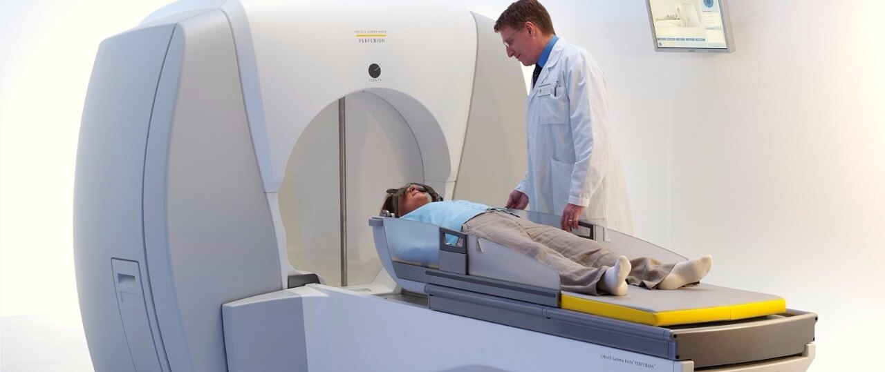

TÜM HABERLER
BEYİN VE OMURGA CERRAHİSİ HAKKINDA HER ŞEY

BEL VE BOYUN FITIKLARI
BEL FITIĞI Bel omurlarının arasında yer alan kıkırdak yastıkların (diskler) omurga kanalına doğru yer değiştirmesine bel fıtığı adı verilir.

EPİLEPSİ NEDİR?
LEpilepsi ne sıklıkla ve kimlerde görülür? Epilepsi nüfusun yaklaşık olarak binde 5’ini etkiler ve her yaşta görülebilir.

PARKINSON HASTALARINDA BEYIN
Beyindeki damarlardan birinin içindeki kas tabakasının zayıflığından dolayı damarda oluşan balonlaşmaya
BAU TIP’TA BEYIN FIRTINASI ESTI
Bahçeşehir Üniversitesi Tıp Fakültesi Göztepe Kampüsü’nde Rhoton Anatomi Laboratuarı açılışı gerçekleşti.

OMURGA CERRAHISI EĞİTİMİ
IGASS ( International Group for Advancement in Spinal Science ) Omurga cerrahlarının eğitimini düzenlemek

GAMMA KNİFE
Gamma knife beyin cerrahlarının beynin anormal alanlarında, herhangi bir kesiye gerek kalmadan ameliyat yapabilmeleri
BEYIN TÜMÖRLERI ALANININ DÜNYADAKI ÖNCÜ BILIM İNSANLARI İSTANBUL’DA TOPLANDI!
Bahçeşehir Üniversitesi Tıp Fakültesi Göztepe Kampüsü’nde Rhoton Anatomi Laboratuarı açılışı gerçekleşti.